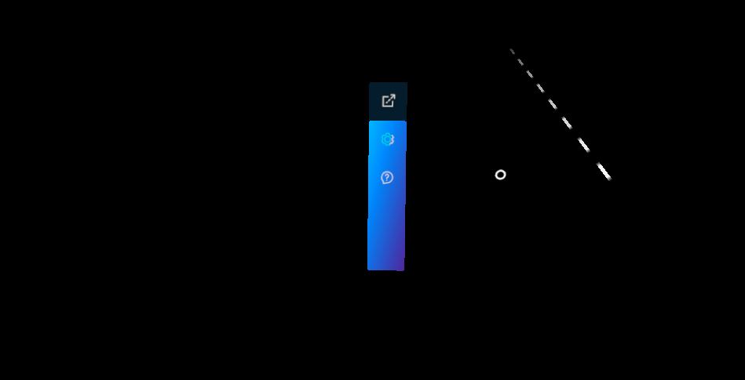
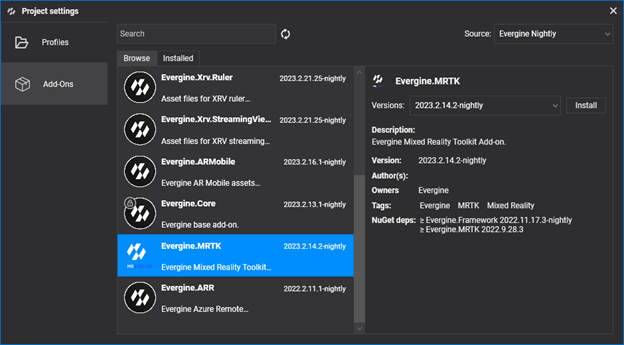
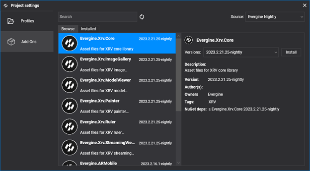
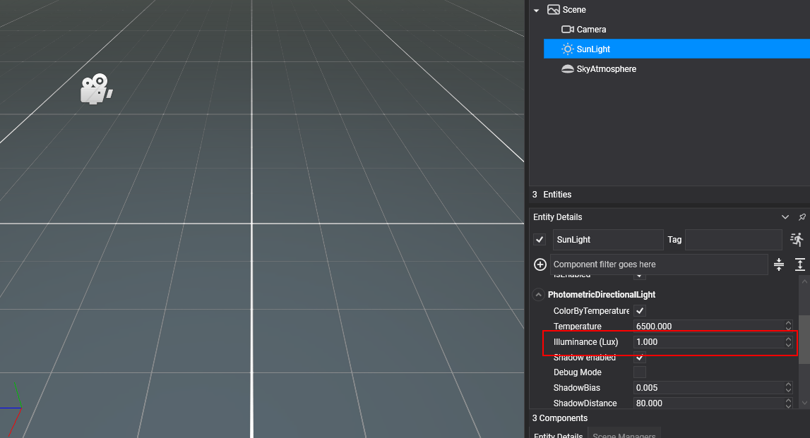

Getting started with XRV

This page prepares an Evergine project to run XRV on a headset. You install the MRTK and XRV add-ons, register XrvService in your application, and initialize it from an MRTK scene. When you finish, the hand menu opens with the default Settings and Help buttons.
Project setup
1. Create a project
Create a project with Evergine Launcher. Along with Windows, add the profile for your target device: Meta Quest or Pico.
2. Install the MRTK add-on
Open the project in Evergine Studio and install the Evergine.MRTK add-on from the Add-ons Manager.

3. Install the XRV core add-on
With MRTK installed, install the Evergine.Xrv.Core add-on in the same way.

Note
The XRV add-ons reference NuGet packages. To use nightly builds, add the Evergine nightly feed to your nuget.config:
<?xml version="1.0" encoding="utf-8"?>
<configuration>
<packageSources>
<add key="nuget.org" value="https://api.nuget.org/v3/index.json" />
<add key="Evergine Nightly" value="https://pkgs.dev.azure.com/plainconcepts/Evergine.Nightly/_packaging/Evergine.NightlyBuilds/nuget/v3/index.json" />
</packageSources>
</configuration>
4. Adjust the sun light
In your default scene, set the Illuminance of the SunLight entity to 1, so XRV materials are not overexposed.

5. Add the Microsoft.Bcl.AsyncInterfaces package
Add this package reference to your shared project (the one that contains your scenes):
<PackageReference Include="Microsoft.Bcl.AsyncInterfaces" Version="7.0.0" />
Code setup
1. Configure the background scheduler
XRV runs part of its work in background tasks. Configure the background scheduler at the end of your Application constructor:
using Evergine.Common.IO;
using Evergine.Framework;
using Evergine.Framework.Services;
using Evergine.Framework.Threading;
public partial class MyApplication : Application
{
public MyApplication()
{
this.Container.Register<Settings>();
this.Container.Register<Clock>();
this.Container.Register<TimerFactory>();
this.Container.Register<Random>();
this.Container.Register<ErrorHandler>();
this.Container.Register<ScreenContextManager>();
this.Container.Register<GraphicsPresenter>();
this.Container.Register<AssetsDirectory>();
this.Container.Register<AssetsService>();
this.Container.Register<ForegroundTaskSchedulerService>();
this.Container.Register<WorkActionScheduler>();
// Required by XRV: lets it schedule work on background threads.
BackgroundTaskScheduler.Background.Configure(this.Container);
}
}
2. Register XrvService
Create the XrvService in Initialize, add the modules you want, and register the instance in the container so scenes and components can resolve it.
using Evergine.Xrv.Core;
public partial class MyApplication : Application
{
public override void Initialize()
{
base.Initialize();
var xrv = new XrvService();
// Add modules here, for example: xrv.AddModule(new RulerModule());
this.Container.RegisterInstance(xrv);
// ... navigate to your scene
}
}
3. Inherit your scene from XRScene and initialize XRV
Your scene must inherit from MRTK's XRScene, as described in Getting started with MRTK. Initialize XRV in OnPostCreateXRScene, when the MRTK cursors and the camera already exist:
using System;
using Evergine.Framework;
using Evergine.MRTK.Scenes;
using Evergine.Xrv.Core;
public class MyScene : XRScene
{
protected override Guid CursorMatPressed => EvergineContent.MRTK.Materials.Cursor.CursorPinch;
protected override Guid CursorMatReleased => EvergineContent.MRTK.Materials.Cursor.CursorBase;
protected override Guid HoloHandsMat => EvergineContent.MRTK.Materials.Hands.QuestHands;
protected override Guid SpatialMappingMat => Guid.Empty;
protected override Guid HandRayTexture => EvergineContent.MRTK.Textures.line_dots_png;
protected override Guid HandRaySampler => EvergineContent.MRTK.Samplers.LinearWrapSampler;
protected override Guid LeftControllerModelPrefab => EvergineContent.MRTK.Prefabs.DefaultLeftController_weprefab;
protected override Guid RightControllerModelPrefab => EvergineContent.MRTK.Prefabs.DefaultRightController_weprefab;
protected override float MaxFarCursorLength => 0.5f;
protected override void OnPostCreateXRScene()
{
base.OnPostCreateXRScene();
// Creates the hand menu, windows, settings, help and themes, and initializes every module.
var xrv = Application.Current.Container.Resolve<XrvService>();
xrv.Initialize(this);
}
}
Note
XrvService.Initialize sets the background color of the scene camera to transparent, so passthrough can show the real world behind your content. Enable passthrough with xrv.Services.Passthrough.EnablePassthrough = true after initialization.
Platform setup
Android
If the Android build fails with an error like this one:
error XA2002: Cannot resolve reference: `Evergine.Editor.Extension`, referenced by `Evergine.MRTK.Editor`. Please add a NuGet package or assembly reference for `Evergine.Editor.Extension`, or remove the reference to `Evergine.MRTK.Editor`.
add the Evergine.Editor.Extension NuGet package to your Android project.
To use passthrough on Meta Quest or Pico, uncomment the passthrough code in MainActivity.cs and the related entries in the Android manifest of your project.
Next steps
The hand menu now shows the default Settings and Help buttons. To add features, install one of the XRV modules, create your own module, or use the XRV API directly, for example to open windows.
The XRV samples project shows all the public modules working together.